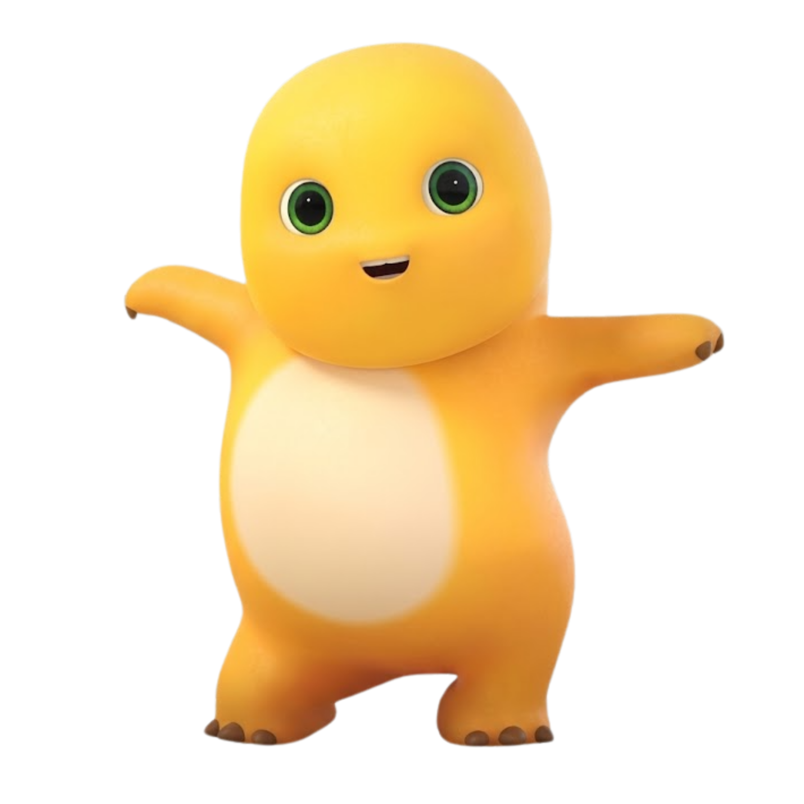
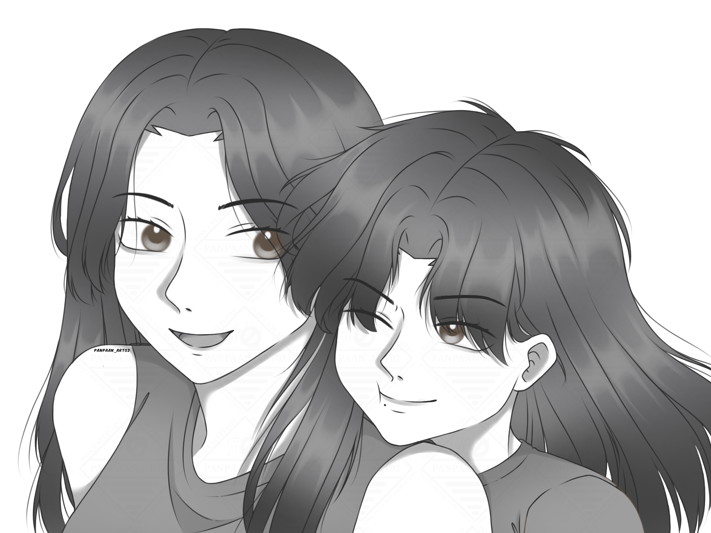

|
Diarsipkan pada Juni 2026 • Bersama Keceriaan Nailong 💛

Halo kakak Alanna.. yang lahir pada tanggal 9 Januari 1999. Nama yang indah dengan tanggal lahir yang cantik. Aku buatkan karangan indah ini hanya untukmu, dan meminta waktu ke depan untuk membacanya.
Kak.. Sejujurnya, aku hanya sebuah permata kecil yang sudah hancur berkeping-keping. Diperbaiki lagi dan lagi tapi kembali hancur lagi. Hingga kalimat "layak untuk tidak hidup" muncul dibenakku sendiri. Aku tidak punya "rumah" saat itu, tidak ada tempat untuk meluapkan isi di dalam diriku hingga menjadi tumpukan jerami. Memenjarakan diriku di sebuah ruangan kosong dan sunyi dengan tubuh yang meringkuk memeluk kakiku sendiri. Luka ku terus membekas disekujur lengan dan pahaku.
"Membuat sebuah tempat "rumah" sangat sulit untukku. Lelah memasang dan melepas topeng di setiap harinya, hingga aku merasa tidak sanggup dalam keadaan seperti itu. Nangisku tertahan, menggantung di langit-langit, menatap kekosongan yang tidak ada ujungnya."

Sampai saat ini.. "Rumah" ini terbentuk dengan sendirinya, perlahan-lahan terisi oleh orang-orang yang aku sayangi, sekaligus mereka yang paling aku takutkan untuk kehilangan, termasuk kakak. Perempuan dengan senyum khas yang tidak lahir dari kemudahan, melainkan dari kekuatan yang dibangun sendiri setelah melewati berbagai masalah tanpa bergantung pada siapa pun. Bahkan saat kakak kehilangan arah dan kasih sayang yang seharusnya menjadi tempatnya pulang.
Terima kasih.. Sudah hadir, mengisi ruang-ruang yang kosong, dan mematahkan kalimat-kalimatku yang selama ini menggantung di langit-langit abu-abuku. Menemani dan menyayangiku dengan cara yang selama ini tidak pernah benar-benar didapatkan dari orang-orang yang hadir dalam tiap menit, jam, dan keseharianku. Menuntunku dan memberiku arah saat aku tidak tau harus melangkah dan mengambil keputusan ke mana.
Aku sangat bersyukur. Entah doa mana yang Allah dengar dan kabulkan, hingga akhirnya mempertemukanku dengan Kakak. Di antara begitu banyak hal yang pernah kupanjatkan dalam doa, mungkin Allah menjawabnya dengan menghadirkan seseorang yang tidak pernah kusangka akan begitu berarti. Jika "rumah" itu tidak pernah hadir dalam hidupku, mungkin sampai hari ini aku menyesali perbuatanku telah menyia-nyiakan kesempatan yang Allah kasih untukku di dunia ini.
Tetap jadi Kakakku yang kuat, tegas, dan penuh kasih sayang untuk adikmu yang kecil dan mungil ini. Sebanyak apa pun aku bertemu dengan orang-orang yang mirip denganmu di sekelilingku, tidak akan pernah ada yang bisa menggantikan posisimu sebagai kakak perempuanku.
Note: Tetap bawa ya boneka matahari (nailong) yang pernah aku berikan ke Jogja. Kalau suatu hari aku tidak memberi kabar dan kakak merindukanku, peluklah matahari kecil itu. Anggap saja ada sedikit bagian dariku yang tetap menemanimu, meski aku tidak berada di dekatmu.

Kakakku yang gemoy, and Love you my lovely sister. Alanna Diandra✨ It is for you:

Foto Spesial Kita Berdua